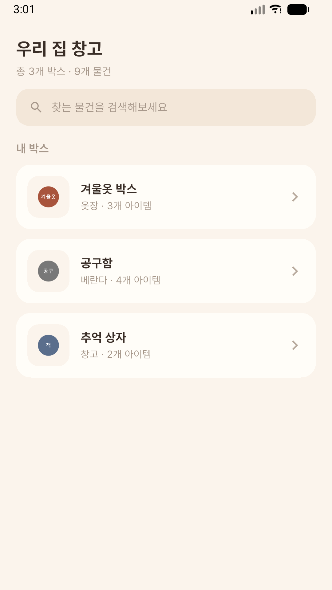
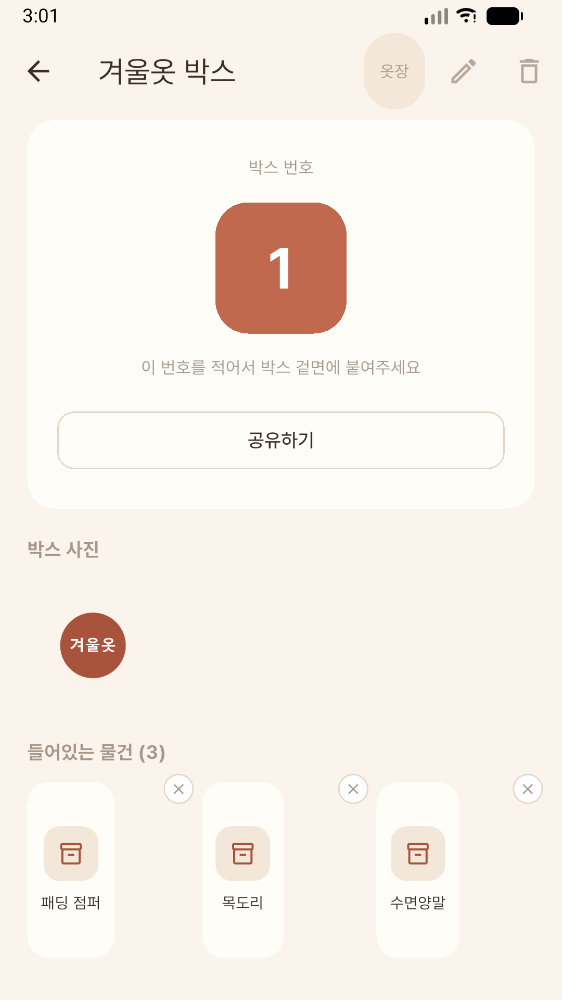
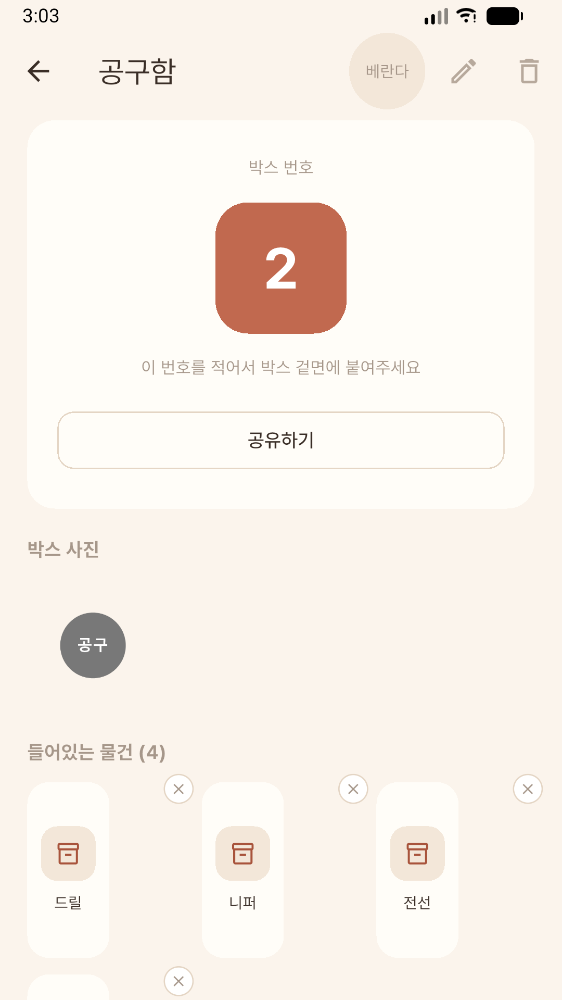
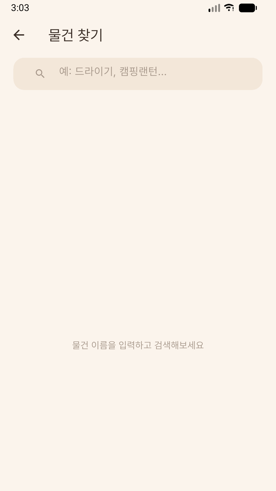

찾는 시간보다 정리하는 시간이 짧게.

박스마다 번호를 붙이고 사진과 이름을 기록해두면, 나중엔 검색 한 번으로 바로 찾을 수 있다. 이사, 창고, 계절 옷 정리에 맞춘 물건 찾기 앱.
이사와 창고 정리를 숱하게 겪으며 매번 박스를 뜯어 안을 확인하는 게 가장 번거로웠다. 번호만 붙여두면 다시 뜯을 일이 없도록, 사진 한 장과 이름 한 줄로 끝나는 가장 짧은 정리 방법을 만들었다.
박스마다 고유 번호를 붙이고, 스티커에 적어 붙이면 끝. 앱에서 번호만 보면 바로 어떤 박스인지 알 수 있어요.
물건 사진을 찍으면 이름을 추천해주는 태그가 떠요. 맞으면 탭 한 번으로 바로 등록돼요.
"충전기 어디 넣었지?" 검색창에 물건 이름만 치면 어느 박스에 들어있는지 바로 찾아줘요.
베란다, 창고, 서랍처럼 원하는 보관 장소를 자유롭게 만들어 박스를 분류할 수 있어요.
박스 번호와 내용물을 가족이나 함께 사는 사람에게 메시지로 바로 공유할 수 있어요.
불필요한 기능 없이 가볍게 만들어서, 정리하다가 바로 열어서 쓰기 편해요.


